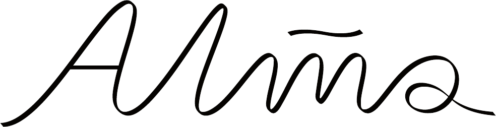
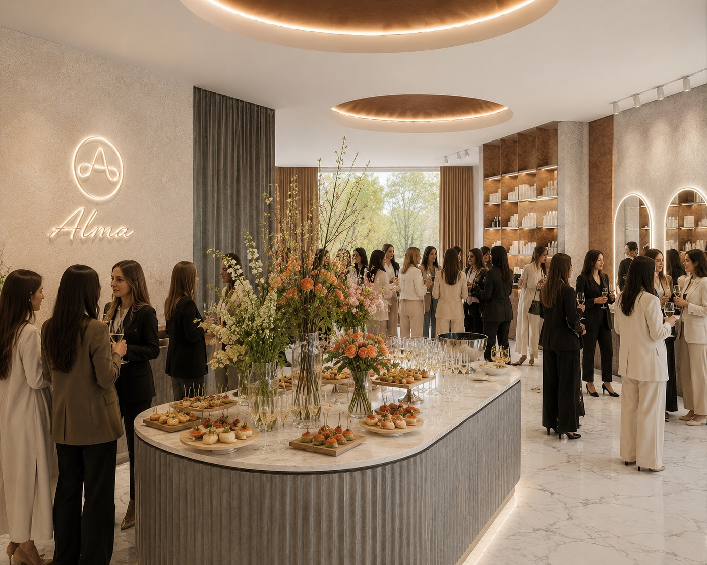
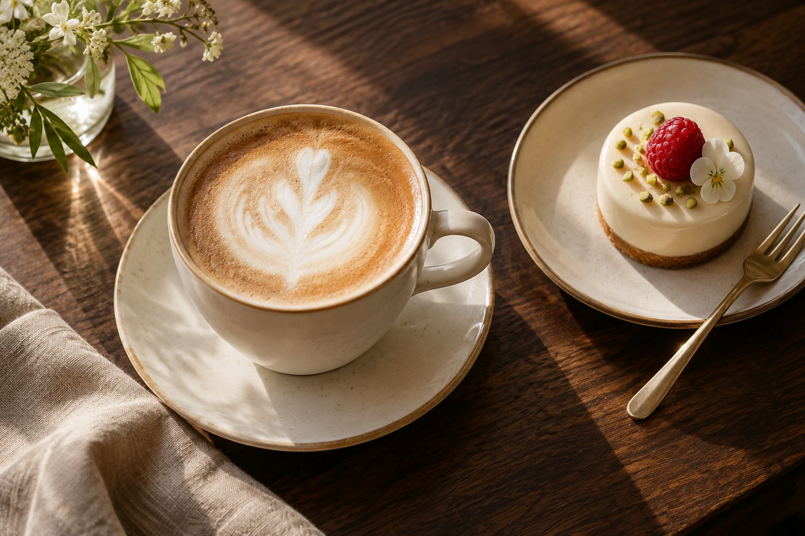
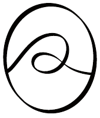

Уважение
Слушать ваши пожелания, ценить время и оставлять пространство для вашего выбора.

ДОМ УХОДА+7 928 974-00-74КРАСОТА · ЗАБОТА · КОФЕ
Время и место, которые принадлежат вам.
Женский салон красоты и кофейня ALMA.

Красота начинается с отношения к себе. Мы создали ALMA, чтобы забота о себе стала естественной частью вашей жизни.
Профессиональный уход, внимание к деталям и хороший кофе. Всё в одном пространстве, где ценят ваше время и уважают ваш выбор.
02 — НАПРАВЛЕНИЯ
Знакомые ритуалы красоты.
Внимательное отношение в каждом.
Стрижка, окрашивание и уход за волосами — с вниманием к вашему образу и пожеланиям.
Уход за ногтями, аккуратность и время для себя в спокойной атмосфере ALMA.
Внимание к форме и деталям, которые подчёркивают вашу индивидуальность.
Индивидуальный подход к уходу за кожей. Выбор процедуры начинается с обсуждения ваших потребностей со специалистом.
Возможность проведения процедуры и подходящий курс определяются на консультации. Есть противопоказания.
Профессиональная косметика и внимательный подбор средств под ваши потребности — как продолжение заботы после визита.

МАЛЕНЬКАЯ ПАУЗА ДЛЯ СЕБЯ03 — ЖЕНСКАЯ КОФЕЙНЯ
Остаться после ухода. Встретиться с подругой. Или ненадолго замедлиться за чашкой любимого напитка.
Наша женская кофейня — часть гостеприимства ALMA и отдельный повод заглянуть.
ТО, ЧТО ВАЖНО ДЛЯ НАС
Слушать ваши пожелания, ценить время и оставлять пространство для вашего выбора.
Хороший сервис складывается из мелочей: света, удобства, чистоты и внимания.
Рекомендовать то, что вам нужно. Не обещать невозможного и не предлагать лишнего.

Женщина расцветает там,
где к ней относятся с уважением.
ВАШ СЛЕДУЮЩИЙ ВИЗИТ
Выберите направление и удобное время. Администратор уточнит детали и подтвердит запись.
БУДЕМ РАДЫ ВАС ВИДЕТЬ
Хасавюрт
ул. Имама Шамиля, 144
Позвоните, чтобы выбрать время визита
и уточнить стоимость услуг.